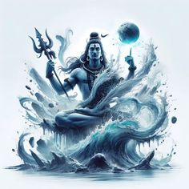

हिंदू धर्म के देवी-देवता |
|
ब्रह्मा |
- ब्रह्मा संसार के निर्माणकर्ता हैं।
- पत्नी: सरस्वती (विद्या और कला की देवी)।
- वाहन: हंस।
- प्रतीक: चार सिर, कमंडल, वेद।
- पूजा: ब्रह्मा की पूजा कम की जाती है। मुख्य मंदिर पुष्कर, राजस्थान में है।
|
|
विष्णु |
- विष्णु संसार के पालन और रक्षा के देवता हैं।
- पत्नी: लक्ष्मी (धन और समृद्धि की देवी)।
- वाहन: गरुड़।
- प्रतीक: शंख, चक्र, गदा, पद्म।
- विष्णु के दस अवतार (दशावतार):
मत्स्य, कूर्म, वराह, नरसिंह, वामन, परशुराम, राम, कृष्ण, बुद्ध, और कल्कि।
- विष्णु के प्रमुख मंदिर: तिरुपति, बद्रीनाथ।
|
|  |
महेश/शिव |
- शिव सृष्टि का संहार और पुनर्निर्माण करते हैं।
- पत्नी: पार्वती (शक्ति की देवी)।
- वाहन: नंदी (बैल)।
- प्रतीक: त्रिशूल, डमरू, तीसरी आंख।
- रूप: रूद्र, नटराज, लिंगम।
- प्रमुख मंदिर: काशी विश्वनाथ, सोमनाथ।
|
|
पार्वती |
- शिव की पत्नी और शक्ति का रूप।
- रूप: दुर्गा (योद्धा देवी), काली (विनाश की देवी)।
- वाहन: सिंह या बाघ।
- पूजा: नवरात्रि, दुर्गा पूजा।
|
 |
लक्ष्मी |
- धन, समृद्धि और वैभव की देवी।
- वाहन: उल्लू।
- प्रतीक: कमल, स्वर्ण सिक्के।
- पूजा: दीपावली पर विशेष पूजा।
|
 |
सरस्वती |
- विद्या, संगीत, और कला की देवी।
- वाहन: हंस।
- प्रतीक: वीणा, पुस्तक।
- पूजा: बसंत पंचमी।
|
 |
दुर्गा |
- दुष्टों का संहार करने वाली शक्ति।
- वाहन: सिंह।
- प्रतीक: तलवार, त्रिशूल, चक्र।
|
|
हिंदू धर्म में यह माना जाता है कि ईश्वर अनंत है और हर जगह मौजूद है। इसे "एक ही सत्य के कई रूप" के रूप में समझाया गया है। इसलिए, हिंदू धर्म में 33 करोड़ देवी-देवताओं का उल्लेख मिलता है, जो ईश्वर की अनंतता और विविधता को दिखाते हैं। हर देवता किसी न किसी शक्ति या गुण का प्रतीक है, जैसे ब्रह्मा (सृष्टि), विष्णु (पालन), और शिव (संहार)। इसके अलावा, हर प्राकृतिक तत्व, जैसे पानी, अग्नि, और वायु, को भी देवता माना गया है। यह दर्शाता है कि ईश्वर हर रूप में और हर जगह है। |
हिंदू धर्म के त्यौहार |
 |
दीपावली |
- महत्व: प्रकाश का पर्व, बुराई पर अच्छाई की विजय का प्रतीक।
- मुख्य आकर्षण: दीये जलाना, पूजा-पाठ, पटाखे फोड़ना और मिठाइयां बांटना।
- पौराणिक कथा: भगवान राम के वनवास से अयोध्या लौटने की खुशी में मनाया जाता है।
|
|
होली |
- महत्व: रंगों का त्योहार, बुराई पर अच्छाई की जीत का प्रतीक।
- मुख्य आकर्षण: रंग-गुलाल, होलिका दहन, और पारंपरिक संगीत।
- पौराणिक कथा: भक्त प्रह्लाद और होलिका की कथा।
|
 |
मकर संक्रांति |
- महत्व: सूर्य देव की आराधना और फसल कटाई का पर्व।
- मुख्य आकर्षण: तिल-गुड़ खाना, पतंग उड़ाना, और पवित्र नदियों में स्नान।
- खास बात: सूर्य का मकर राशि में प्रवेश।
|
|
नवरात्रि |
- महत्व: देवी दुर्गा के नौ रूपों की पूजा।
- मुख्य आकर्षण: गरबा और डांडिया नृत्य, व्रत और पूजा।
- पौराणिक कथा: महिषासुर पर देवी दुर्गा की विजय।
|
|
रक्षाबंधन |
- महत्व: भाई-बहन के प्रेम और सुरक्षा का प्रतीक।
- मुख्य आकर्षण: बहन द्वारा राखी बांधना और भाई का उपहार देना।
- पौराणिक कथा: यह त्यौहार द्रौपदी और भगवान कृष्ण की कथा से भी जुड़ा है।
|
|
कृष्ण जन्माष्टमी |
- महत्व: भगवान कृष्ण के जन्म का पर्व।
- मुख्य आकर्षण: झांकियां, मटकी फोड़ प्रतियोगिता।
- पौराणिक कथा: कंस के आतंक से मथुरा को मुक्त करने के लिए श्रीकृष्ण का जन्म।
|
|
हिंदू धर्म में बहुत सारे त्योहार मनाए जाते हैं। इनमें से कुछ बड़े त्योहार जैसे दीपावली, होली, और मकर संक्रांति सभी जगह मनाए जाते हैं, जबकि कुछ त्योहार खास क्षेत्रों में मनाए जाते हैं, जैसे छठ पूजा और हरियाली तीज। हर त्योहार की अपनी खास कहानी और महत्व होता है। ये सभी त्योहार खुशियां लाते हैं और लोगों को जोड़ने का काम करते हैं। |